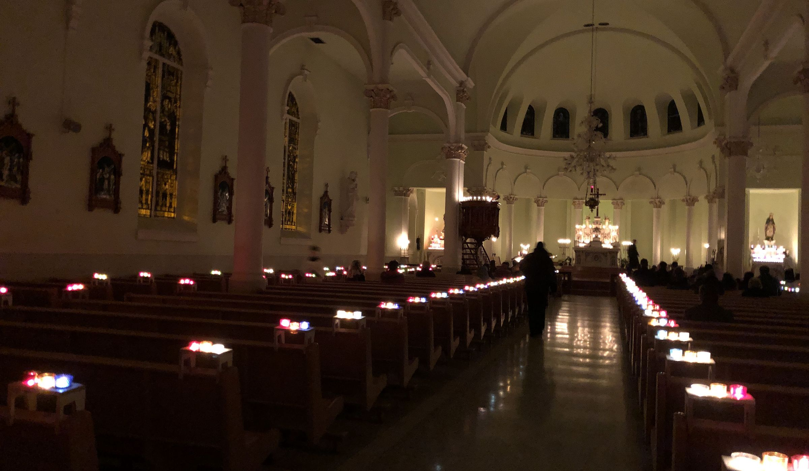
Saint Clement Parishat St. Anne Church
A parish of the Archdiocese of Ottawa-Cornwall, served by the Priestly Fraternity of Saint Peter, offering Mass and the Sacraments in the traditional Roman Rite.
Mass & confession times
Weekdays
Confession
Usually 30 minutes before every Mass, including weekdays.
Saturdays 3:30–4:30 pm (except Christmas Day, New Year’s Day, Holy Saturday and Easter Sunday).
Weekday confessions ease the Sunday line-up. For an appointment, contact the parish.
This week · Oct 12–18
From the Oct 11 bulletin →- 7:00 am
- 9:00 am
- 7:00 am
- 6:30 pmFatima devotions
- 7:30 pm
- 7:00 am
- 7:30 pm
- 7:00 am
- 7:00 am
- 7:30 pm
- 7:00 am
- 9:00 am
- 3:30 pmConfessions
- 8:00 am
- 10:30 am
- 5:30 pm
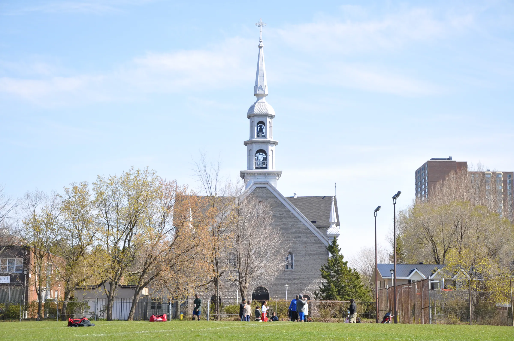
St. Anne Church since 1873Saint Clement Parish since 1968
Find usIn the heart of Ottawa’s Lower Town.
St. Anne Church from the park
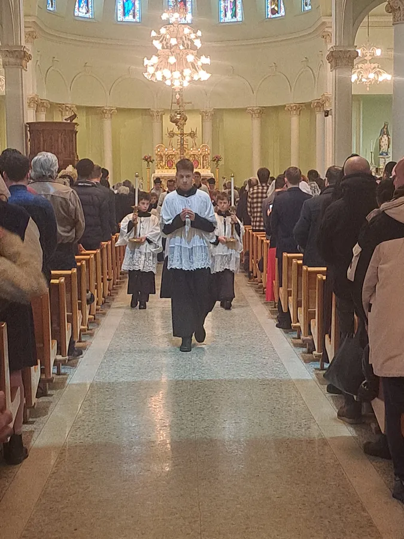
New to the Latin Mass?
Everyone is welcome. A few things that help on a first visit:
Choose a Mass
The 10:30 am High Mass is sung; 8:00 am and 5:30 pm are quiet Low Masses. Or watch the livestream first.
Follow with a missal
English-Latin, French-Latin, children’s and used missals at the parish bookstore on Sundays. Daily texts online.
What to expect
Latin, the priest facing the altar, long silences. It’s fine simply to watch, listen and pray.
Communion & dress
Communion kneeling and on the tongue, for prepared Catholics. Modest dress; many women wear a veil. Questions?
“General” means common Latin Mass practice, not a parish rule.
The beauty of the liturgy, the life of a parish
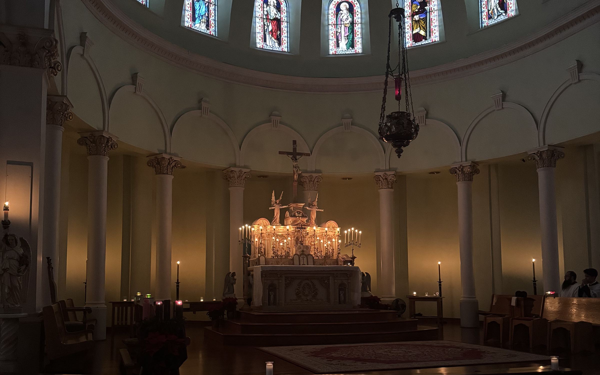
Introibo ad altare Dei.
“I will go in unto the altar of God.” Psalm 42, from the prayers at the foot of the altar
All the Sacraments of the Church
Confession
30 minutes before every Mass and Saturdays 3:30–4:30 pm, or by appointment.
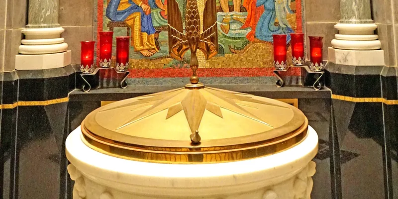
Baptism & MatrimonyBaptisms & weddings
Celebrated in the traditional Roman Rite; please arrange them well in advance.
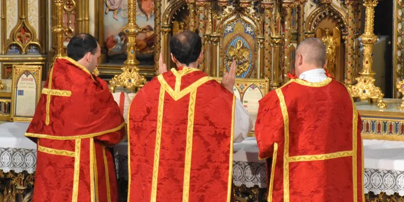
ConfirmationConfirmation for youth
For parishioners in grade 6 or older. Registration for the 2027 class (forms in English and French) closed October 4.
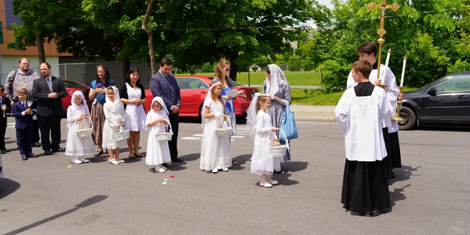
Holy EucharistFirst Holy Communion
Preparation for children receiving the Eucharist for the first time.
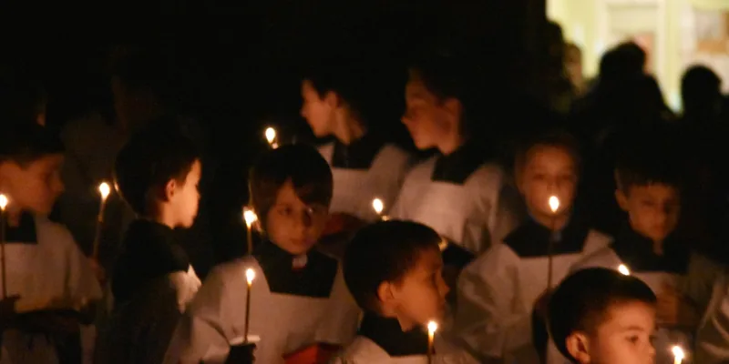
CatechesisFamily catechism
Free video series from the Baltimore Catechism: the Creed, Commandments, Sacraments and prayer.
For baptisms, weddings, confirmation, First Communion or catechism, call the parish office at (613) 565-9656, ext. 2.
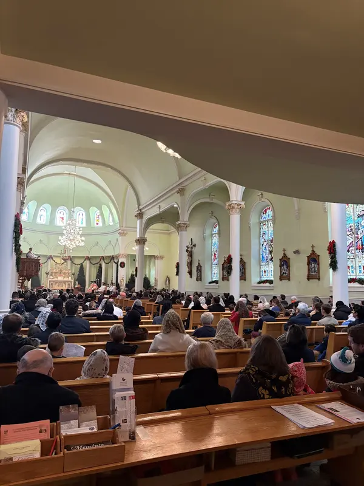
A living community
Choir and children’s schola, altar servers, young adults, the Legion of Mary, the Knights of Columbus: there is a place for everyone.
Coming up
Visit to Carmel
Young women are invited to the Carmel of the Three Hearts in Almonte: Mass at 9 am, a talk, prayer, a visit with the sisters and a picnic.
stclementyag@gmail.com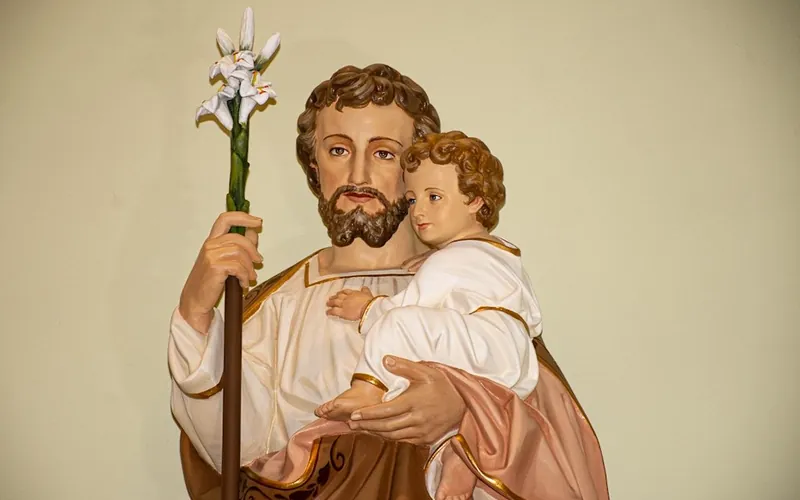
All Saints party
For children, after the 9 am Mass at De La Salle High School across the street. Come dressed as a favourite saint; potluck lunch.
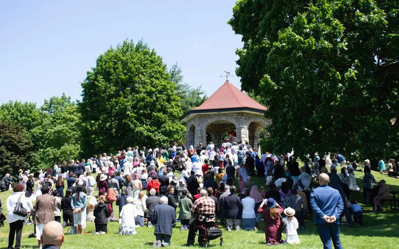
Parish Dinner & Silent Auction
Guest speaker Brian Holdsworth, with Fr. Josef Bisig, FSSP, co-founder of the Fraternity. Space is limited.
Tickets →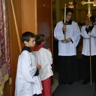
Altar serversBoys and young men of the parish; server practice once a month. Contact Fr. Pinho Sousa.Watch the Mass
The Sunday 10:30 High Mass and major feasts are streamed live on the parish YouTube channel.
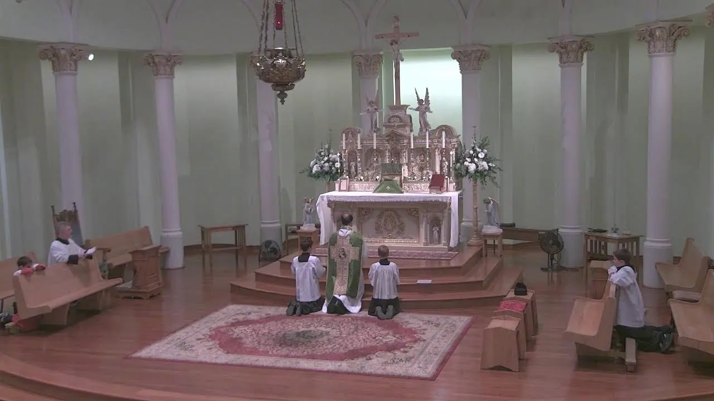
Your priests
What is the FSSP?
A Society of Apostolic Life of Pontifical right: priests, without religious vows, working together for a common mission in the Church under the authority of the Holy See.
Founded on 18 July 1988 at the Abbey of Hauterive in Switzerland, its mission is two-fold: the formation and sanctification of priests, and the care of souls, using the liturgical books in force in 1962.
Canada’s oldest Traditional Mass community
From a small group gathered in 1968 to a parish in a historic church: the milestones.
- 1873
The cornerstone of St. Anne, designed by Québec architect Joseph-Pierre-Michel Lecourt in the style of Québec’s small country parish churches, is blessed on 3 May by Msgr. Guigues, Ottawa’s first bishop. The first Mass is celebrated on 30 November.
- 1968
In March, Archbishop Joseph-Aurèle Plourde permits a small group of the faithful to gather for Sunday Mass in the Tridentine form at the Monastery of the Sisters Adorers of the Precious Blood on Echo Drive.
- 1984
The community acquires its first chapel, on Albion Road, placed under the patronage of St. Clement, pope and martyr.
- 1993
Archbishop Marcel Gervais gives the community a church at 87 Mann Avenue in Sandy Hill, and soon elevates it to a quasi-parish.
- 1995 – 1997
The FSSP assumes pastoral care on 1 January 1995. In November 1997 St. Clement is erected a personal parish: the first worldwide established after Vatican II for those attached to the older liturgical traditions.
- 2012
At the invitation of Archbishop Terrence Prendergast, the parish moves to St. Anne. On Trinity Sunday in June, the first Solemn High Mass in Latin and Gregorian chant in decades is celebrated there.
“To its members, Saint Clement is a very special parish indeed.”Bernard Pothier, The Continual Sacrifice: A History of the Origins of Saint Clement Parish, Ottawa 1968–1998
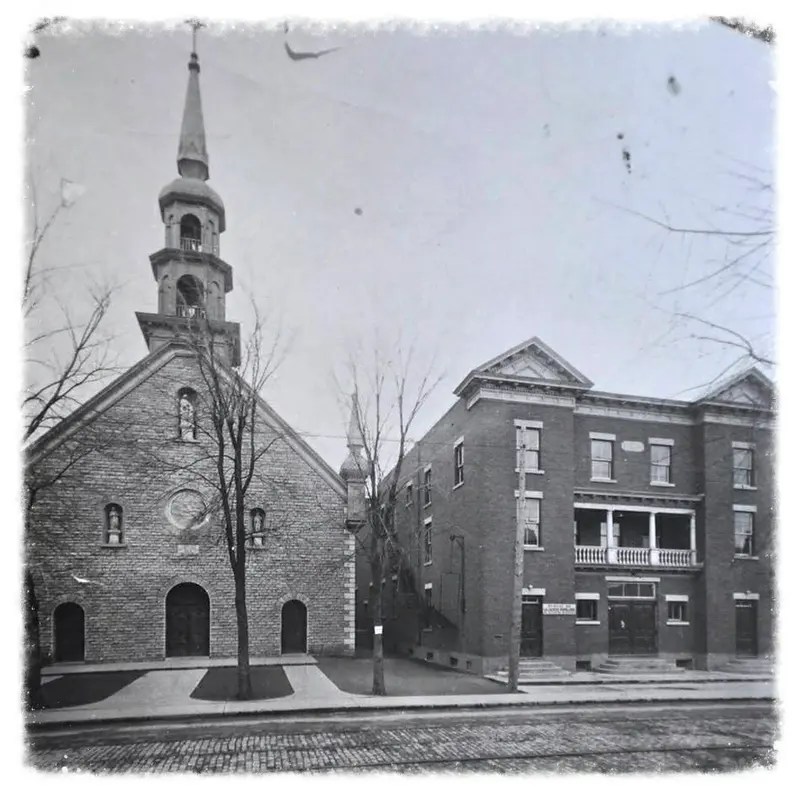
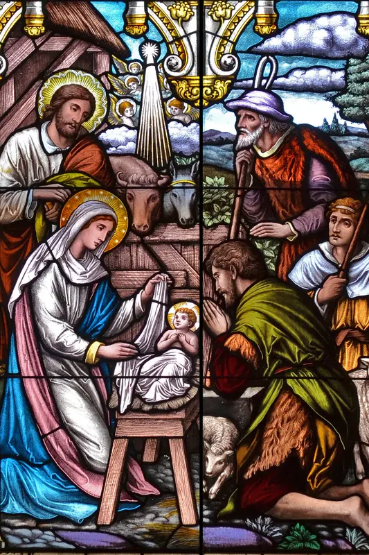
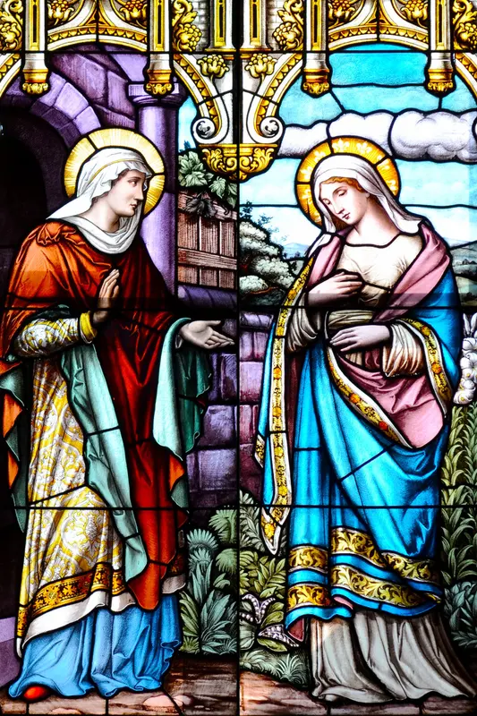
Your generosity keeps the lamps lit
Electricity, heating, repairs and insurance all depend on regular collections. Tax receipts are issued.
- Send to
finances@saintclement.ca- Security answer
Clement
Include your name, address and the reason for a tax receipt.
Through CanadaHelps, which issues the tax receipt.
Monthly gifts can be cancelled at any time.
Complete the form, then mail it or drop it off at the parish office.
PAD form (PDF) →Envelope boxes on request: registration form.
Gifts of securities through CanadaHelps or the Archdiocese, directed to St. Clement Parish.

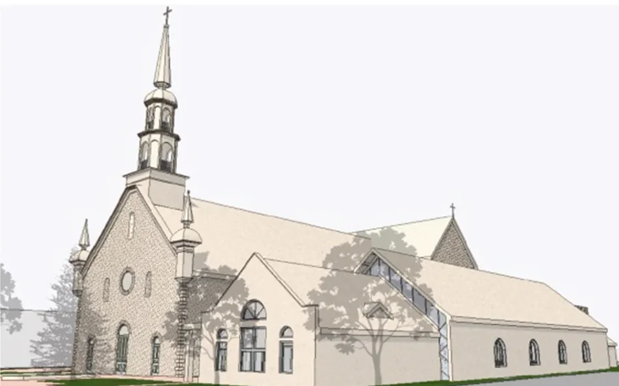
A parish hall
Pledges and donations to the parish hall are not subject to the 13% diocesan tax. Figure from the October 11, 2026 bulletin.
The parish bulletin
Published every week in English and French: the schedule, Mass intentions, announcements and events.
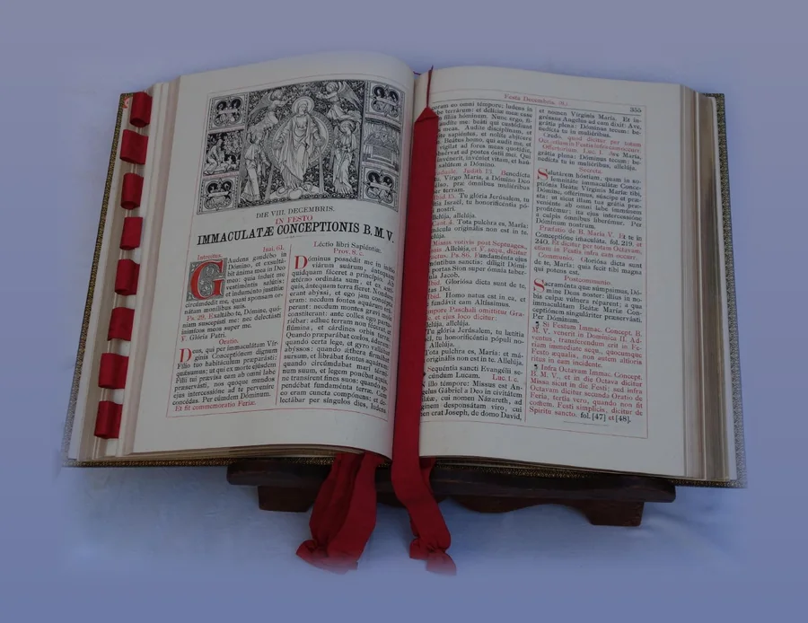
Stay in touch
Parish Flocknote emails: schedule changes, news and events.